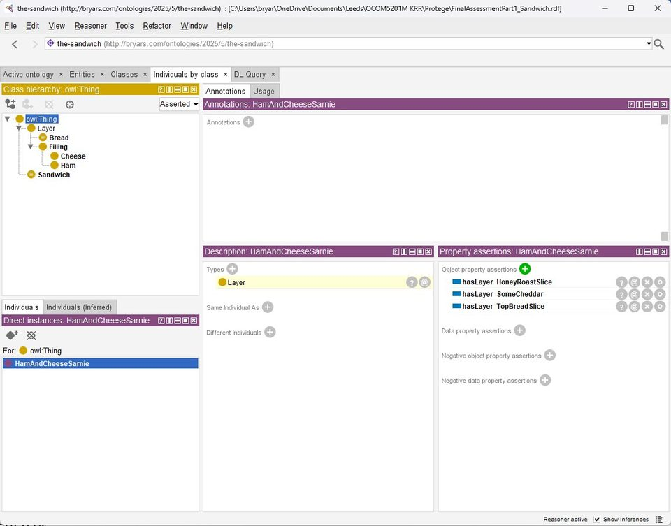
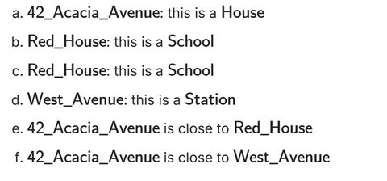

Assessment
Define “sandwich”.
I modelled sandwiches, layers, bread, fillings and edge cases in OWL, then used a reasoner to classify valid and invalid instances.
OCOM5201M / Knowledge Representation and Reasoning
My ontology assessment became a surprisingly serious investigation into sandwichness: bread, fillings, open-world assumptions, disjoint classes, cardinality constraints, doorstoppers, open sandwiches and the family debate over starch-on-starch-on-starch.
It was funny on the surface, but technically useful underneath: OWL, description logic, reasoners, consistency, modelling trade-offs, Lean and Prolog all made the same point in different dialects. Formal meaning is hard.

Assessment
I modelled sandwiches, layers, bread, fillings and edge cases in OWL, then used a reasoner to classify valid and invalid instances.
Open world
The open-world assumption was the most practically unsettling idea: unknown facts are not automatically false, which changes how constraints must be expressed.
Formal tools
Lean and Prolog exercises made inference rules tangible, while Protege made modelling errors immediately visible.
Lesson
Ontologies are not mere taxonomy. They are executable claims about a domain, and bad modelling gives you bad reasoning with great confidence.
